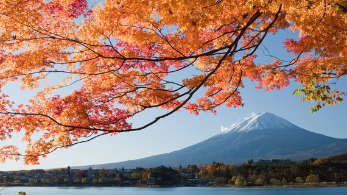

The Fujisan Marathon

Located in Japan near the Fuji Mountain, it is a hill run that goes around the base of the volcano. It is very scenic and at the summit, runners can get a view of the nearby cities. This run is very cold and dry so runners must wear light but thick clothing.